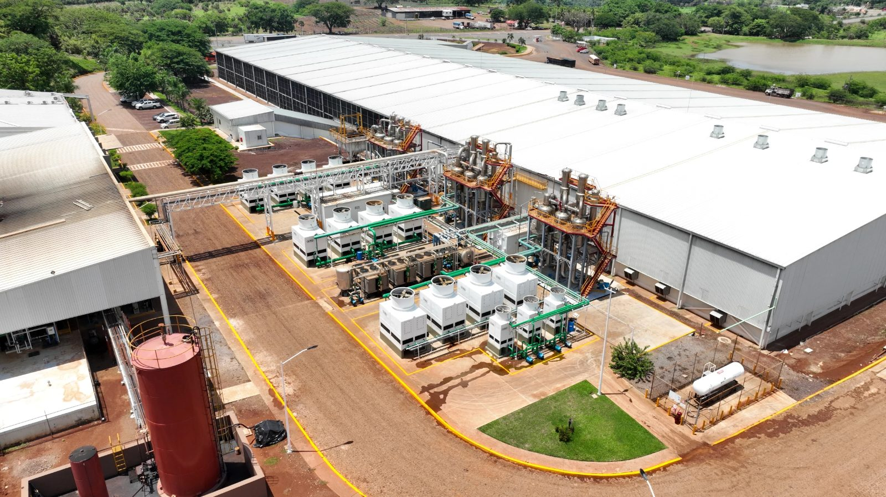
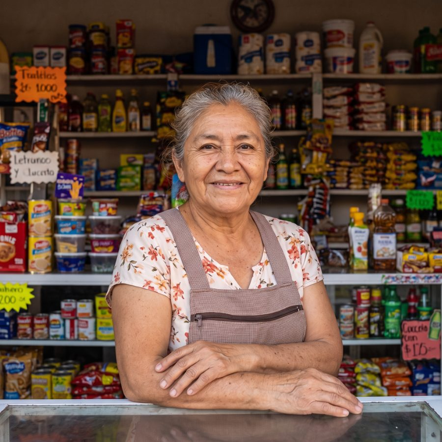

· Octubre 2026
· Octubre 2026Grupo Álica: de holding de empresas locales a plataforma regional integrada
Dónde las plataformas digitales, la automatización, la inteligencia artificial y la seguridad pueden mover los números de cada empresa del grupo. Una propuesta de Wigilabs, octubre de 2026.
Cinco fuerzas convergen entre 2026 y 2030. Ninguna se resuelve solo con más camiones o más sucursales.
«La prioridad tecnológica número uno no es una app: es una arquitectura de datos y procesos común que hoy no se observa.»
21 empresas atienden a los mismos hogares, comercios y hoteles de Nayarit. Esta es la oportunidad de cada una.
Cada empresa conserva sus sistemas. Lo nuevo es una capa común que conecta datos, canales e IA.
Sin la capa media, cada canal digital se construye aislado y la vista única del cliente nunca existe.
{{ g.titulo }}
{{ g.nota }}21 empresas repiten las mismas tareas administrativas. Automatizarlas una vez sirve a todas.
Los procesos exactos, como pagos y conciliaciones, se automatizan con reglas deterministas. La IA se reserva para leer documentos y datos no estructurados, siempre con revisión humana.
{{ a.hoy }}
- {{ s.t }}
La IA vale cuando mueve un indicador con nombre y tiene un dueño que actúa sobre el resultado.
Los datos financieros de 21 empresas, los expedientes de colaboradores y los planes de previsión no deberían viajar a servicios públicos de IA. AktivIA, la arquitectura de IA de Wigilabs, corre modelos abiertos en la infraestructura del grupo, con control de acceso por rol y trazabilidad completa.
Con 21 empresas conectadas, el mayor riesgo no es un ataque: es que un incidente en una filial llegue a todas.
Wigilabs comercializa Terniion, la plataforma zero trust de Xiid. Hace invisible la infraestructura: no abre puertos de entrada, conecta proceso a proceso por túneles sellados y cifra con algoritmos poscuánticos. Reemplaza la VPN para el acceso a aplicaciones y complementa la seguridad perimetral existente.
Casos de uso para Álica
8 casos · Xiid y Hacknoid¿Cuánto cuesta un día sin operar?
No promete un ROI: dimensiona la seguridad y la continuidad con los datos que usted escribe.
{{ varTexto }}
Como referencia de contexto: la suspensión de labores del 23 de febrero de 2026.
Estimación de orden de magnitud para priorizar. Las cifras se validan con datos reales en el sprint y el piloto.
Según Xiid: supera el estándar zero trust NIST SP 800-207, usa cifrado poscuántico compatible con NIST, obtuvo una Autorización para Operar del Departamento de Defensa de EE. UU. y fue probado por el Laboratorio de Investigación de la Fuerza Aérea de EE. UU.
Siete simulaciones para recorrer con clics, como si ya existieran.
Cada una se abre en pantalla completa, con una guía que explica cada paso del recorrido, lo que vive el cliente y lo que ve la empresa. Todas son candidatas a un sprint de 10 días hábiles con Demo Day al final.



{{ c.nombre }}
{{ c.idea }}
- {{ r }}
Un rango de beneficio anual, conservador y esperado, con los datos que usted escribe.
No hay cifras de Álica precargadas: las ventas parten de un valor normalizado de 100 millones de pesos y el resto de los datos internos llevan valores de ejemplo marcados para reemplazar.
Siete iniciativas entran primero.
Gestión de ingresos, Pedido Nayar, el agente automotriz, el tablero del consejo, el registro de jornada, el diagnóstico Hacknoid y Xiid en planta y accesos remotos.
Las iniciativas de ‘Empezar aquí’ se justifican aunque no cambie nada más en el portafolio.
Tres oleadas en 24 meses a partir del arranque, cada una con su puerta de decisión.
Tres pasos para empezar.
Sesión de 45 minutos para armar el backlog
Álica trae de 3 a 5 retos de negocio; salen dos sprints definidos con KPI, dueño y criterio de éxito, sin compromiso de contratación. Deben estar el dueño del área, alguien que conozca la operación y alguien que conozca los datos.
Primer sprint: Pedido Nayar en 10 días hábiles
Prototipo funcionando con datos históricos o sintéticos y una decisión en el Demo Day. Unas 6 horas del equipo de Álica en total.
Diagnóstico de seguridad y piloto Xiid
Evaluación Hacknoid por empresa y piloto de Xiid en una carga crítica, como el acceso remoto a planta.
Nombrar un responsable de datos y digital del grupo con mandato transversal acelera las tres.